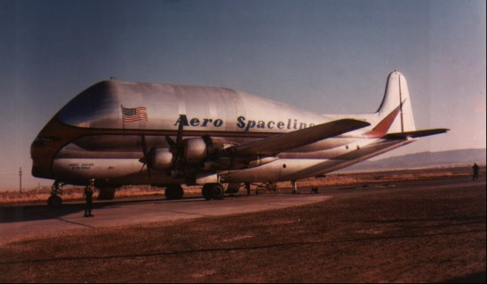
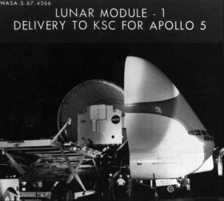
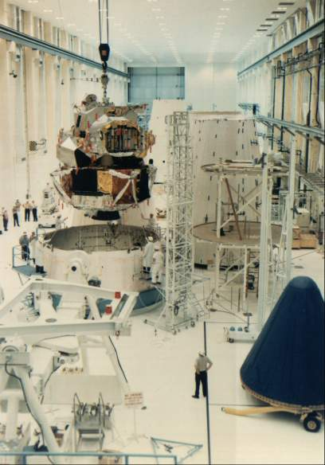
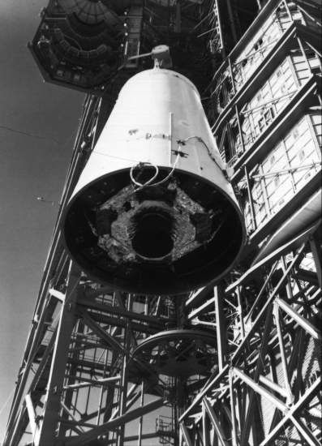

A 1966 schedule called for LM-1 to be delivered to Cape Kennedy on 16 November of that year, but the craft ran into difficulties in manufacturing (see Chapter 8) and the months slipped by. Changes after the command module fire (see Chapter 9) caused further delays, and LM-1 did not arrive in Florida until 27 June 1967 (three months beyond its original launch date). John J. Williams, a veteran of both Mercury and Gemini, headed a 400-man spacecraft operations activity at Kennedy Space Center. When the spacecraft arrived, Williams' men made sure that it met specifications and then watched the contractor during test, maintenance, and modifications to see that systems and equipment worked.14

The Super Guppy Aero Spaceliner, billed as the "largest airplane in the world," delivered many space vehicles from factories to the Kennedy Space Center launch site.

In late June 1967, the Super Guppy opened to deposit Lunar Module 1 at KSC in preparation for the Apollo 5 mission.
The launch vehicle for the LM-1 mission was the one that would have boosted the ill-fated Grissom crew into orbit. Saturn IB 204 had been at the Cape since August 1966. When it was taken down from Launch Complex 34 in March 1967, the launch preparation crew, under the direction of Rocco Petrone, inspected the booster for corrosion or any other damage it might have sustained during its long stay on the pad and then erected it on Launch Complex 37, getting it in place on 12 April.15

Ascent and descent stages, forming Lunar Module 1, are mated with the spacecraft-lunar module adapter in the Manned Spacecraft Operations Building at KSC in November 1967. Because its mission was earth-orbital flight, LM-1 had no landing gear.

At right below, LM-1 inside the adapter is hoisted to the top of Saturn launch vehicle 204.
The Apollo stack for this mission was 55 meters high, but it looked stubby, since the launch escape tower and the command and service modules mere missing. LM-1 - legless, because it would burn up on reentry (it had no heatshield) and therefore needed no landing gear - rested inside the spacecraft-lunar module adapter.16
Twenty-five priorities, monitored by 17 specialists, would put the vehicle through its paces to make sure that it was safe for crew operations. Three items at the top of the list pertained to fire-in-the-hole (FITH) requirements, or tests to check structural effects, staging dynamics, and stability during a simulated lunar abort. (FITH simply meant firing the ascent stage engine while it was still attached to the descent stage.) Other objectives included operating the descent and ascent propulsion systems, starting and stopping each to simulate phases of the lunar landing mission.17
By late fall and early winter of 1967, most of the mission documents were ready. Mission Director William C. Schneider, who had played this same role in the Gemini program, issued the mission rules on 28 November, ladling out responsibilities and spelling out what would be done in almost every eventuality. As the final testing on the vehicles progressed toward launch, flight readiness reviews were held at the Cape and in Washington. In the first few days of the new year, Mueller wrote Administrator James Webb that the launch would take place "no earlier than" 18 January 1968.18
Rocco Petrone's launch team had difficulty loading the propellants, mainly because of procedural troubles, and small irritants such as clogged filters and ground support equipment problems further hampered the start of the mission. A simulated launch demonstration ended on 19 January, and the 22-hour countdown to launch began on 21 January. Back in Houston, lead flight director John Hodge and his chief assistant, Eugene F. Kranz, listened from the mission control center to the activities at the Cape launch center and waited patiently to take over direction of the flight once Apollo 5 cleared the pad.19
Just before dark, at 5:48 on the afternoon of 22 January, after several hours' delay because of equipment problems, Apollo 5 lifted off. The powered phase of booster flight was uneventful, and LM-1, still attached to the S-IVB stage, went into orbit about 10 minutes into the flight. In less than 45 minutes, its attitude control engines pulled LM-1 away from the S-IVB. After checking out the spacecraft for two revolutions, ground control signaled the descent engine to fire for 38 seconds. Four seconds later, LM-1's guidance system sensed that the vehicle was not going fast enough and stopped the engine. The cutoff was a planned feature - in a manned flight, it would give the crew time to analyze the situation and decide whether the engine should be restarted to continue the mission. Under normal conditions, the burn would have started with full tank pressurization and would have reached the proper velocity within four seconds. For this mission, however, the tank was only partially pressurized and it would have taken six seconds to reach the required speed. Because of the premature cutoff, the flight controllers moved to a planned alternate mission.
Ground control sent a switch-off signal to the guidance computer and cut in a mission programmer to command the lander's maneuvers. The descent engine was fired twice more (once for a full 33 seconds). There were two ascent engine firings, one for the fire-in-the-hole abort maneuver. Mueller reported to Webb that all primary objectives had been achieved. LM-1 reentered the atmosphere, and its fiery remains plunged into the Pacific several hundred kilometers southwest of Guam on 12 February.20
14. Charles D. Benson and William Barnaby Faherty, Moonport: A History of Apollo Launch Facilities and Operations. NASA SP-4204, 1978, pp. 435-37.
15. Ibid., p. 435; Willis H. Shapley to Mueller et al., "Saturn IB Nomenclature," 2 Dec. 1967.
16. MSC, "Apollo 5 Mission Report," MSC-PA-R-68-7, 27 March 1968, pp. 13-30, 13-57; NASA, "Apollo 5 First Lunar Module Test in Space," press kit, news release 68-6, 11 Jan. 1968.
17. TRW Systems, "Apollo 5 Mission Requirements: 204 LM-1 'B' Type Mission, LM Development," SPD7-R-002, rev. 5, 4 Dec. 1967; Apollo 5 press kit, pp. 2-4.
18. William C. Schneider to MSC and KSC, Attn.: Christopher C. Kraft, Jr., and Rocco A. Petrone, "Apollo 5 Mission Rules," 28 Nov. 1967, with enc.; Capt. Chester M. Lee to Dir., Apollo Prog., "Apollo 5 (SA-204/LM-1) Status," 11 Dec. 1967; Gilruth memo, "LM-1 MSC Flight Readiness Review," 1 Dec. 1967; MSC, "LM Headquarters Flight Readiness Review," 3 Jan. 1968; Mueller to Admin., NASA, "Apollo 5 Mission (SA-204/LM-1)," 5 Jan. 1968, with enc.
19. Mueller Report, 15 Jan. 1968; MSC, "Mission Status Report," Apollo News Center release 2, 20 Jan. 1968; Benson and Faherty, Moonport, p. 437; MSC, "Flight Controller for Apollo 5," Apollo News Center release 1, 19 Jan. 1968.
20. Phillips to Admin., NASA, "Apollo 5 Mission (SA-204/LM-1) Post Launch Report #1," 12 Feb. 1968, with enc., and #2, 25 March 1968; Mueller to Webb, no subj., 23 Jan. 1968; Mueller Report, 22 Jan. 1968; MSC, "Apollo 5 Mission Report," pp. 1-1, 1-2, 6.12-1; John D. Stevenson to Mueller and Cortright, "Decay of Apollo 5 Lunar Module," 12 Feb. 1968.